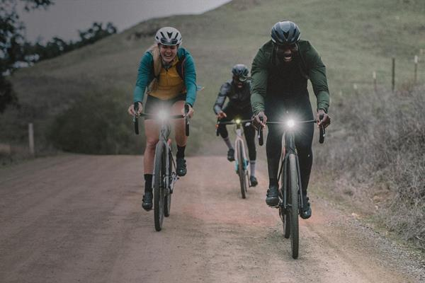
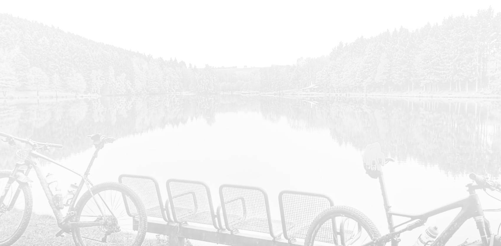
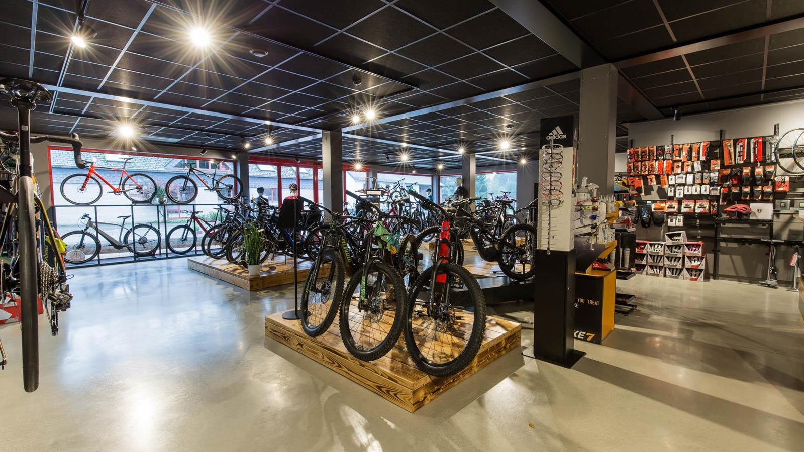

Beratung,die zuhört.
Erst reden, dann schrauben. Wir fragen, wie du fährst – nicht, was du ausgeben willst.
Samstag, 9 Uhr.
Kaffee bei Achim.
Dann raus.
Racepoint ist der Bikeshop vom Achim aus den Videos. Rennrad, Gravel, MTB, E-Bike oder das erste Kinderrad: Wir beraten, schrauben und fitten – für jedes Budget.
Erst reden, dann schrauben. Wir fragen, wie du fährst – nicht, was du ausgeben willst.
Specialized, Trek, Canyon oder Omas Hollandrad – wir schrauben an allen Marken. Vormittags gehört die Werkstatt ganz deinem Bike.
Vom Kinderrad bis zum S-Works: Rennrad, Gravel, MTB und E-Bike zum Anfassen und Probefahren.
Retül-Fitting: Wir vermessen dich in 3D, damit nichts zwickt – auf 30 Kilometern wie auf 300.
58 Kilometer rund um Schönberg, sieben Stopps, ein Kaffee. Scroll mit – und finde unterwegs dein Rad.

Start in Schönberg.
Treffpunkt ist der Laden. Espresso, Reifendruck checken, kurz schnacken – und los. Achim kennt jede Runde hier. Und jede Schraube.

Kurz, steil, glatt.
Rampen bis 12 %, Kurven wie gemalt. Hier zeigt ein leichtes Rennrad, was es kann – vom Allez bis zum S-Works Tarmac.

Weiter Himmel, breite Reifen.
Moor links, Moor rechts, Schotter unter dir. Gravel heißt: Wege fahren, die auf keiner Rennradkarte stehen. Diverge oder Crux – mit Platz für Gepäck.

Wurzeln, Anlieger, Matsch.
Die Trails liegen direkt vor der Tür. Stumpjumper, Enduro, Epic – und wenn die Gabel nach Service ruft: Fahrwerk-Service machen wir auch. Für alle Marken.

Mehr Berge, gleiches Lächeln.
Sieben Kilometer bergauf – und oben noch Luft zum Reden. Turbo Levo, Vado oder Creo: Komm zur Probefahrt.

Eis für alle.
Die Kleinen am Ufer, die Großen am Kiosk. Kinderräder, Einsteiger-Bikes, Trekking: Bei uns gibt’s das passende Rad – für jedes Budget.

Bike an die Wand, Kaffee in die Hand.
Und wenn unterwegs was geknarzt hat: Die Werkstatt ist direkt nebenan. Wir schrauben an allen Marken.
Termin für dein BikeAchim baut Traumräder – und erklärt jeden Handgriff. Vom Unboxing bis zur letzten Schraube, direkt aus der Werkstatt in Schönberg.
Builds, Unboxings, Schrauber-Tipps: regelmäßig neu auf YouTube. Glocke an – und dann komm vorbei und schau dir das Rad in echt an.
Es geht nicht
ums Rad.
Es geht um das Gefühl, wenn alles passt.
Keine Scheu vor den S-Works im Schaufenster: Bei uns startest du da, wo du gerade stehst. Wir beraten beim Kinderrad genauso gründlich wie beim Dreambuild.
Rockhopper · Allez · Sirrus · Turbo Vado SL · Kinderräder
Für Einsteiger, Familien, Pendler
Tarmac · Diverge · Stumpjumper · Turbo Levo · Turbo Creo
Für Hobby-Racer, Gravel-Fans, Trail-Liebhaber
S-Works Tarmac · Epic · Levo · Aethos · Crux · Custom-Aufbau
Für alle, die es genau wissen wollen
Bike übers Unternehmen leasen oder bequem in Raten zahlen: Wir rechnen dir die Möglichkeiten ehrlich durch.
„Ich bin der Achim aus den Videos. Komm vorbei, wir finden das Rad, das zu dir passt. Der Kaffee steht.“
Achim Leufgen · Meister Zweiradmechanik, Retül-Fitter
Werkstatt arbeitet vormittags – Reparaturen am besten mit Termin.
Racepoint · Schönberg (St. Vith) · Ostbelgien · Fahrzeit mit dem Auto, ca.